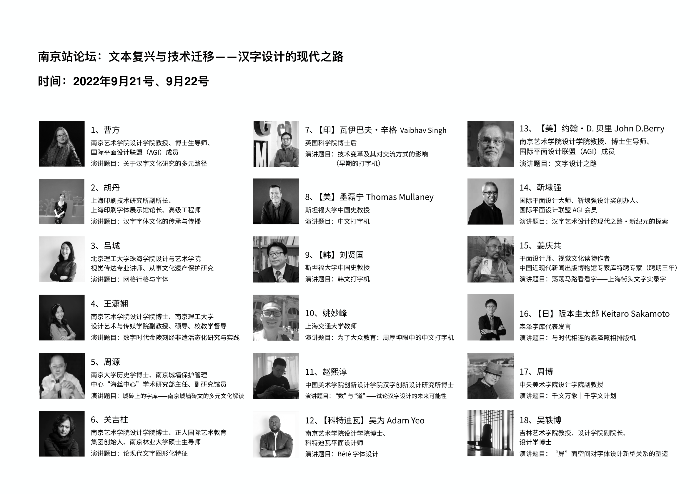
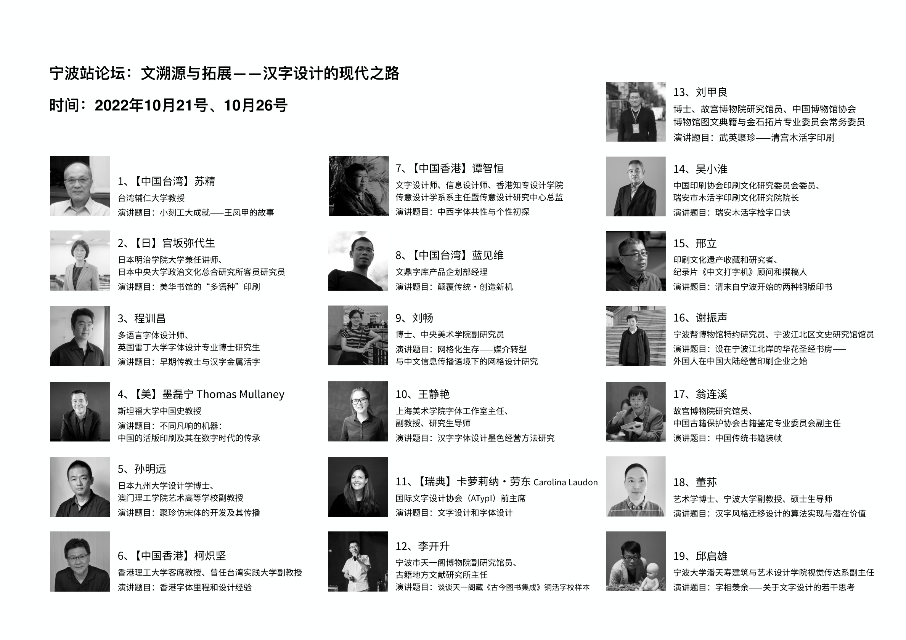
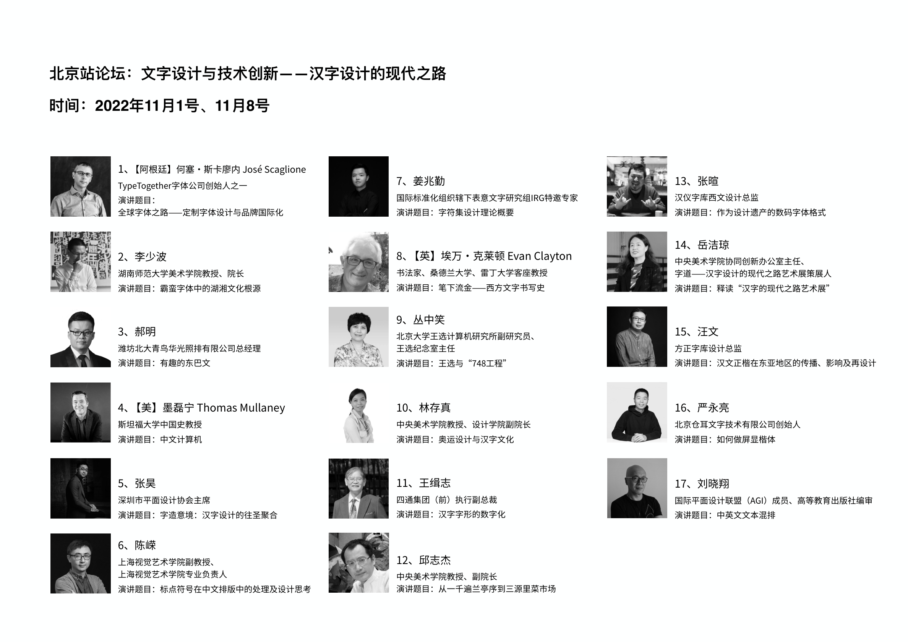
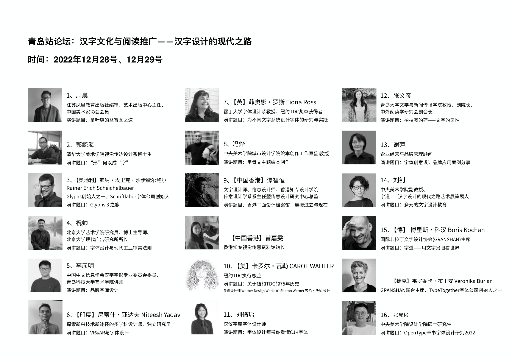

Overview概览
Way of Type: Modernisation of Chinese Typography字道——汉字设计的现代之路
With the theme of modernisation of Chinese typography, the exhibition traces the development of modern Chinese character design through changes in printing, type design, visual presentation, and the cultural community of characters.
展览以汉字设计的现代化为主题，通过印刷方式、字体设计、视觉呈现及汉字文化群体的变迁，
梳理中国现代汉字设计的发展历程。
Forum论坛
Way of Type: Modernisation of Chinese Typography字道——汉字设计的现代之路
Public forums held alongside the touring exhibition, bringing together type designers, researchers, and historians at each domestic station to discuss Chinese character design past and present.
展览巡展期间同步举办的公开论坛，汇聚字体设计师、研究者与历史学者，在国内各站点探讨汉字设计的历史与当下。
Anyang安阳


Nanjing南京


Beijing北京


Ningbo宁波


Huzhou湖州


Qingdao青岛


Zhangzhou / Xiamen University漳州／厦门大学


University of Reading雷丁大学


South Africa南非

Republic of Korea韩国


China Station 02中国站 02
Nanjing南京

China Station 04中国站 04
Ningbo宁波

China Station 03中国站 03
Beijing北京

China Station 06中国站 06
Qingdao青岛
